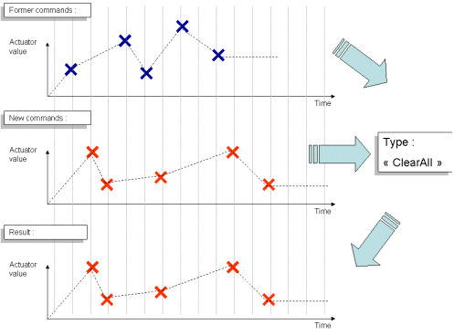
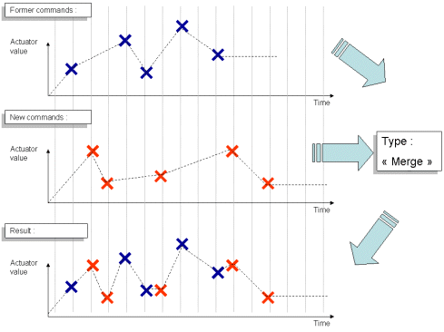
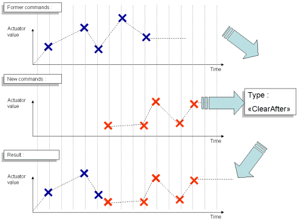
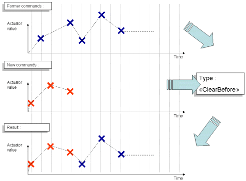

DCM¶
What is the DCM¶
The DCM is a software module, part of NAOqi, in charge of the communication with almost every electronic device in robots (boards, sensors, actuators ...), excepting sound (in or out) and cameras.
It manages the main communication buses between the head and the body, and also the communication inside the head. The DCM is thus the link between the “upper level” software (others naoqi modules) and the “lower level” software (soft in electronic boards). Modules like ALMotion and ALLeds directly send commands to Actuators using the DCM, while extractors and other modules use sensor results returned by the DCM in ALMemory.
The DCM is the NAOqi module part of another software named HAL – i.e. Hardware Abstraction Layer.
As the DCM runs some software security, its use is mandatory to access the robot hardware.
The DCM runs in constant-time cycle, typically between 1 and 10 ms, depending the robot.
Purpose¶
The DCM has two main purposes:
- Send commands to Actuators,
- Update Actuator and Sensor values.
What are Actuators and Sensors¶
Actuators and Sensors, from a DCM point of view, could be “physical” actuators (joint position, LEDs, motor current...) of “virtual” ones (like stiffness which is a parameter off the control loop).
For further details, see:  Actuator & Sensor list
or
Actuator & Sensor list
or  Actuator & Sensor list.
Actuator & Sensor list.
How it works¶
- The DCM API allows sending commands to Actuators. You can update, with one call, one or more Actuator(s). Commands include a time information of when the Actuator needs to receive the value.
- To get Actuator and Sensors values, you need to read them in the ALMemory. The DCM updates them as far as they change.
{kind=link}
| A | A NAOqi module or your code sends a request, listing timed commands to apply to one or more Actuator(s). For further details, see: Building and sending requests. |
| B | Timed commands are stored in a buffer. At each cycle, DCM engine analyzes, for each Actuator, the previous and the next order (if there are some) based on the current time and computes the appropriate command to send using a linear interpolation. For further details, see: Learning more about timed commands treatment. |
| C | Computed value is sent to the Electronic devices. The Actuator value is also updated in ALMemory with the sent command. |
| D | DCM reads the updated Sensor values and updates them in ALMemory. |
Why two values in ALMemory¶
Actuators store the last requested commands while Sensors store the real values obtained.
In many cases, they may be slightly different: command out of possible range, obstacle...
Concurrent access¶
NAOqi modules as well as user code using NAOqi may access to the DCM API, and then send Actuator commands.
The DCM has no priority or blocking system to avoid concurrency access on Actuator. It will apply all order, and if there is conflict, the last one will be applied.
NAOqi modules, like ALMotion or ALLeds send new order continuously, and may prevent you to access Actuators. So you need either to deactivate these modules, or to look in their API how to prevent them to access the Actuator you need.
Building and sending requests¶
Two methods allow sending requests.
| Use ... | To update ... |
|---|---|
DCMProxy::set |
one Actuator or a list of Actuators (through an Alias) with one unique list of timed commands. Examples
|
DCMProxy::setAlias |
a list of Actuators (through an Alias) with a specific list of timed command for each Actuator. Example Make a group of LEDs blink twice while others fade out slowly and the left arm moves as if to say goodbye. Benefit You could obtain the same result by sending several
|
Each method requires an ALValue as parameter, each one with a different structure, but both share the same elements.
Timed command¶
A Timed command contains an order and the time when to apply it:
[‘order’, ‘time’]
Where:
‘order’ is one float number, it is the value to be sent to the Actuator.
The meaning of the value may be, according to the Actuator nature, a joint position to reach in rad, a LED intensity value in 0-1.0 range, etc.
‘time’ is a 4 bytes integer, it is an absolute value based on the system time in milliseconds.
You can send a request to the DCM to get the current time, or read it directly if you have a module on the robot motherboard.
For further details, see: Learning more about timed commands treatment.
Update type¶
Update type specifies how new commands will be added when there are already Timed commands in the internal buffer of an Actuator.
There are 4 possible types of update:
| ClearAll | Formers commands (for this Actuator) are simply deleted and changed by the new ones. Use clearAll with no new commands to delete everything. The last sent value will be kept. |
| Merge | New commands are just mixed with formers ones (be careful if there are two commands at exactly the same time).  |
| ClearAfter | Every former command that is after the first new command will be deleted.  |
| ClearBefore | Every former command that is before the last new command will be deleted.  |
{kind=link}
{kind=link}
{kind=link}
{kind=link}
Actuators & Sensor names¶
The name of the Actuator to use in the API, or the name of the Sensor value to read in ALMemory, is made of 3 part, separated by a “/”:
| a prefix | (Fixed, but also given by the getPrefix API). This prefix is not mandatory for actuators in the API. |
| a name | the name of the sensor/actuator, generally composed of different section using “/” as a separator. All sensor are ended with “sensor” and all actuator by “actuator”. |
| an attribute | The attribute for the actuator and sensor main value is simply “Value”. This is the most useful attribute. |
Example 1: the name of the Actuator “green led” in the chest is:
Device/SubDeviceList/ChestBoard/Led/Green/Actuator/Value
Device/SubDeviceListis the prefixChestBoard/Led/Green/Actuatoris the nameValueis the attribute
Example 2: the name of the electric current Sensor of the joint named headPitch is:
Device/HeadPitch/ElectricCurrent/Sensor/Value
For further details, see: Actuator & Sensor list
or Actuator & Sensor list.
Alias¶
Creating an Alias is a way to send faster commands to many Actuators at the same time.
They are defined dynamically by a DCMProxy::createAlias.
They also could be changed.
An Alias is composed of a name, and a list of Actuator names.
[‘Alias name’, [‘Actuator_1 name’, ‘Actuator_2 name’, ... ‘Actuator_x name’]]
Warning
Be careful, Alias changes are not thread safe.
Warning
The DCM is not optimized for a huge number of Aliases.